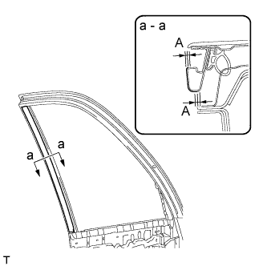
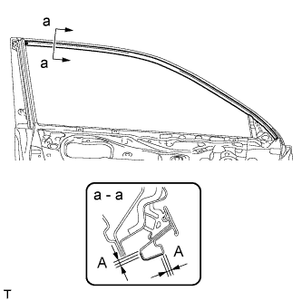
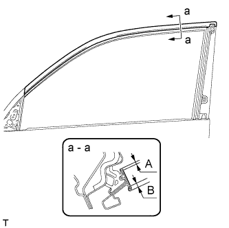
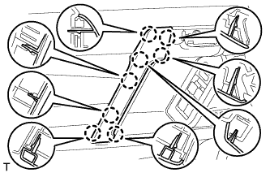
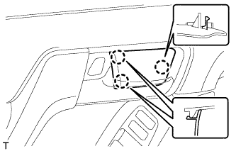

СВЕТОМАСКИРОВОЧНАЯ ЛЕНТА (для передней двери) > УСТАНОВКА |
| Параметр / Устройство | Температура |
| Кузов автомобиля | 40 - 60°C (104 - 140°F) |
| Молдинг рамы окна | 20 - 30°C (68 - 86°F) |
| Светомаскировочная лента | 20 - 30°C (68 - 86°F) |
| Наружный уплотнитель | 20 - 30°C (68 - 86°F) |
| 1. УКАЗАНИЯ ПО ВЫПОЛНЕНИЮ РЕМОНТА |
Очистите поверхность кузова автомобиля.
С помощью нагревательной лампы разогрейте поверхность кузова.
Удалите остатки клейкой ленты чистящим средством.
Температура деталей при установке.
Если температура окружающего воздуха ниже 15°C (59°F), перед установкой разогрейте поверхность кузова автомобиля (установочную поверхность рамы двери) и ленту до температуры 20-30°C (68-86°F) с помощью нагревательной лампы. Если температура окружающего воздуха превышает 35°C (95°F), перед установкой следует охладить поверхность кузова автомобиля (установочную поверхность рамы двери) и ленту до температуры 20-30°C (68-86°F).
Перед установкой.
Убедитесь в отсутствии загрязнений на и вокруг поверхности кузова автомобиля в месте установки ленты (установочной поверхности рамы двери), а также проверьте гладкость поверхности. Если поверхность является неровной или загрязненной, при прижатии ленты к поверхности под ленту попадет воздух, и внешний вид ухудшится.
Ключевые моменты при работе со светомаскировочной лентой.
Лента легко сгибается и скручивается. Поэтому, чтобы она была ровной, храните ее между листами картона или подобного материала в сухом месте.
Рекомендации по закреплению ленты (порядок применения резинового скребка и порядок закрепления для плоских поверхностей).
Во избежание появления воздушных пузырьков при нанесении отрезок ленты, подлежащий приклеиванию, необходимо приподнять над поверхностью кузова автомобиля так, чтобы клейкий слой ленты не соприкасался с ней. Наклоните резиновый скребок под углом 40-50° (при движении вперед) или 30-45° (при оттягивании) по отношению к поверхности кузова автомобиля и прижимайте ленту к поверхности с усилием 20-30 Н (2-3 кгс), двигая скребок с постоянной медленной скоростью 3-7 см (1,2-2,8 дюйма) в секунду.
| *A | Нажатие | *B | Оттягивание |
| *1 | Резиновый скребок | *2 | Светомаскировочная лента |
| *3 | Прокладочная бумага | - | - |
| *a | Разрез | *b | Сторона без обивки |
| *c | Сторона с обивкой | - | - |
 |
Рекомендации по закреплению ленты (порядок применения резинового скребка и порядок закрепления для поверхностей окантовки).
Прижимать ленту к таким поверхностям достаточно сложно, поэтому процедура наклеивания выполняется в несколько этапов, как показано на рисунке. Пальцем или ручкой резинового скребка медленно нанесите ленту на участок окантовки автомобиля, особенно, в случае маленькой окантовки.
| *1 | Резиновый скребок |
| *a | Первый |
| *b | Второй |
| *c | Третий |
Рекомендации по закреплению ленты (порядок применения резинового скребка и порядок закрепления для углов).
Снимите отслаивающуюся бумагу и аккуратно наклейте ленту пальцами.
Нагрейте ленту с помощью нагревательной лампы перед наложением на угол и медленно наложите ее, чтобы избежать сморщивания ленты и добиться желаемого эстетического вида.
Проверка после установки.
После завершения процедуры нанесения ленты убедитесь, что она наклеена аккуратно. Если лента наложена неаккуратно, наложите новую ленту.
| 2. УСТАНОВИТЕ НИЖНИЙ НАРУЖНЫЙ УПЛОТНИТЕЛЬ ЛЕВОЙ ПЕРЕДНЕЙ ДВЕРИ |
|  |
Положение нового нижнего наружного уплотнителя передней двери показано на рисунке.
| Область | Заданные условия |
| А | +/-1,0 мм (0,039 дюйма) от конца |
| 3. УСТАНОВИТЕ НАРУЖНЫЙ УПЛОТНИТЕЛЬ ЛЕВОЙ ПЕРЕДНЕЙ ДВЕРИ |
|  |
Положение нового наружного уплотнителя передней двери показано на рисунке.
| Участок | Заданные условия |
| А | +/-1,0 мм (0,039 дюйма) от конца |
| 4. УСТАНОВИТЕ ЛЕВУЮ СВЕТОМАСКИРОВОЧНУЮ ЛЕНТУ № 1 |
|  |
Положение новой светомаскировочной ленты показано на рисунке.
| Участок | Заданные условия |
| А | 2–4 мм (0,078–0,158 дюйма) |
| B | 4 - 6 мм (0,157 - 0,236 дюйма) |
| 5. УСТАНОВИТЕ ЗАДНИЙ МОЛДИНГ РАМЫ ОКНА ЛЕВОЙ ПЕРЕДНЕЙ ДВЕРИ |
Очистите поверхность кузова автомобиля.
С помощью нагревательной лампы разогрейте поверхность кузова.
Снимите двухстороннюю клейкую ленту с поверхности кузова автомобиля.
Удалите остатки клейкой ленты чистящим средством.
Установите новый задний молдинг оконной рамы передней двери.
С помощью нагревательной лампы прогрейте новый молдинг задней рамы окна передней двери и поверхность кузова автомобиля.
Снимите с поверхности заднего молдинга рамы окна передней двери отслаивающуюся бумагу.
Закрепите фиксатор и двухстороннюю клейкую ленту, чтобы установить задний молдинг рамы окна передней двери.
Установите новый фиксатор молдинга рамы окна двери.
| 6. УСТАНОВИТЕ УПЛОТНИТЕЛЬ ЛЕВОЙ ПЕРЕДНЕЙ ДВЕРИ |
Установите верхнюю часть уплотнителя передней двери, закрепив ее 3 фиксаторами.
| 7. УСТАНОВИТЕ МОЛДИНГ РЕМНЯ ЛЕВОЙ ПЕРЕДНЕЙ ДВЕРИ |
Установите молдинг ремня передней двери, закрепив его 6 захватами.
| 8. УСТАНОВИТЕ НАПРАВЛЯЮЩУЮ СТЕКЛА ЛЕВОЙ ПЕРЕДНЕЙ ДВЕРИ |
 |
Установите направляющую стекла передней двери.
| 9. УСТАНОВИТЕ СТЕКЛО ЛЕВОЙ ПЕРЕДНЕЙ ДВЕРИ В СБОРЕ |
Подсоедините провод к отрицательному (-) выводу аккумуляторной батареи.
Подсоедините главный переключатель электрических стеклоподъемников в сборе и сместите стекло передней двери таким образом, чтобы были видны места установки болтов стекла двери.
Отсоедините провод от отрицательного (-) вывода аккумуляторной батареи и снимите главный выключатель электрических стеклоподъемников в сборе.
 |
Вставьте стекло передней двери в панель передней двери вдоль направляющей стекла передней двери в направлении, указанном на рисунке стрелками, и в порядке, показанном на рисунке.
 |
Закрепите стекло передней двери в сборе 2 болтами.
| 10. УСТАНОВИТЕ ЛЕВОЕ НАРУЖНОЕ ЗЕРКАЛО ЗАДНЕГО ВИДА В СБОРЕ |
Введите в зацепление захват, чтобы закрепить наружное зеркало заднего вида, а затем заверните 3 гайки.
Подсоедините разъем.
| 11. УСТАНОВИТЕ КРЫШКУ ТЕХНОЛОГИЧЕСКОГО ОТВЕРСТИЯ ЛЕВОЙ ПЕРЕДНЕЙ ДВЕРИ |
Наклейте новую бутиловую ленту на панель передней двери.
 |
Проденьте трос дистанционного управления замком передней двери в сборе и внутренний трос замка передней двери в сборе через новую крышку технологического отверстия передней двери.
| *1 | Контрольная точка |
Закрепите крышку технологического отверстия передней двери, используя контрольные точки на панели передней двери.
 |
Установите 2 зажима.
Вверните болт, чтобы закрепить жгут проводов передней двери.
| 12. УСТАНОВИТЕ ВНУТРЕННИЙ УПЛОТНИТЕЛЬ СТЕКЛА ЛЕВОЙ ПЕРЕДНЕЙ ДВЕРИ |
 |
Установите внутренний уплотнитель стекла передней двери.
| 13. УСТАНОВИТЕ ПАНЕЛЬ ОБЛИЦОВКИ ЛЕВОЙ ПЕРЕДНЕЙ ДВЕРИ В СБОРЕ |
 |
Подсоедините трос дистанционного управления замком передней двери в сборе и внутренний трос замка передней двери в сборе.
Подсоедините 2 разъема.
Для моделей с запоминающими устройствами сидений:
Подсоедините разъемы.
 |
Закрепите панель облицовки передней двери с помощью 4 захватов на внутреннем уплотнителе стекла передней двери, как показано на рисунке.
 |
Введите в зацепление 12 фиксаторов и держатель панели облицовки передней двери, чтобы установить панель облицовки передней двери.
Вверните 3 винта.
| 14. УСТАНОВИТЕ ЛЕВУЮ НАКЛАДКУ ВЕРХНЕГО ПОРУЧНЯ |
|  |
Введите в зацепление 8 захватов и установите облицовку верхнего поручня.
| 15. УСТАНОВИТЕ ДЕРЖАТЕЛЬ ВНУТРЕННЕЙ РУЧКИ ЛЕВОЙ ДВЕРИ № 2 |
|  |
Установите держатель внутренней ручки и закрепите его 3 захватами.
| 16. УСТАНОВИТЕ ОБЛИЦОВКУ КРОНШТЕЙНА НИЖНЕЙ РАМЫ ЛЕВОЙ ПЕРЕДНЕЙ ДВЕРИ |
Введите в зацепление 2 захвата, чтобы установить облицовку кронштейна нижней рамы передней двери.
| 17. ПОДСОЕДИНИТЕ ПРОВОД К ОТРИЦАТЕЛЬНОМУ ВЫВОДУ АККУМУЛЯТОРНОЙ БАТАРЕИ |
| 18. ОТРЕГУЛИРУЙТЕ ПОЛОЖЕНИЕ БОКОВОЙ ТЕЛЕКАМЕРЫ В СБОРЕ (для моделей с монитором бокового обзора) |
Для моделей с монитором заднего вида:
Отрегулируйте положение боковой телекамеры (Нажмите здесь).
Для моделей с системой помощи при парковке:
Отрегулируйте положение боковой телекамеры (Нажмите здесь).